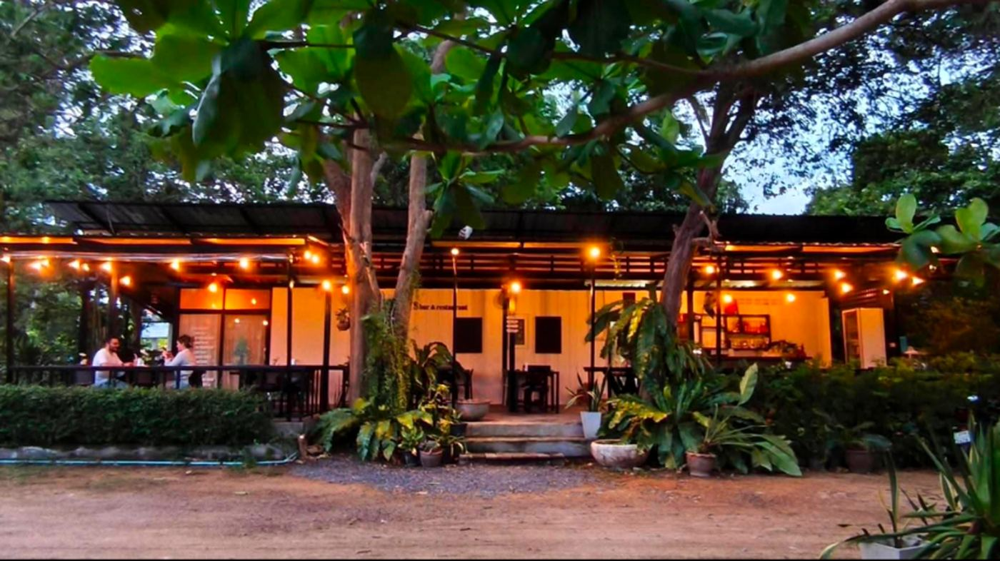
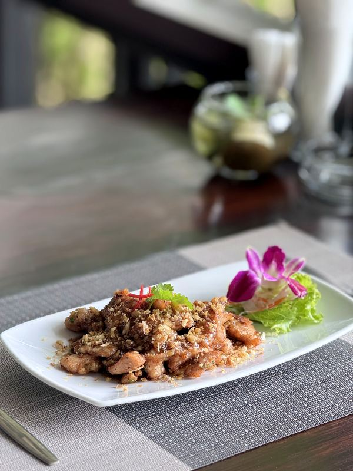
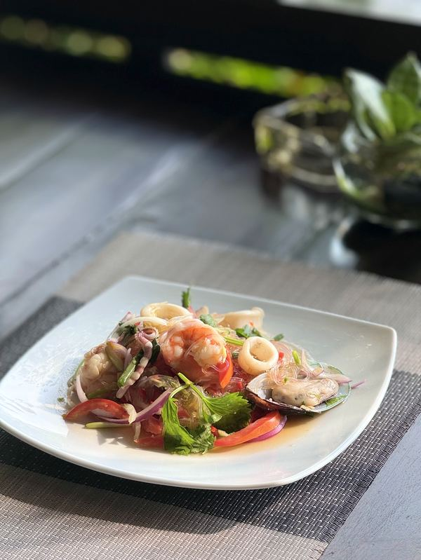
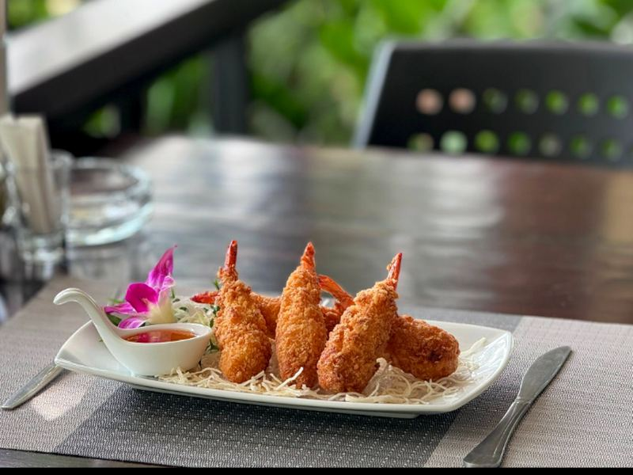
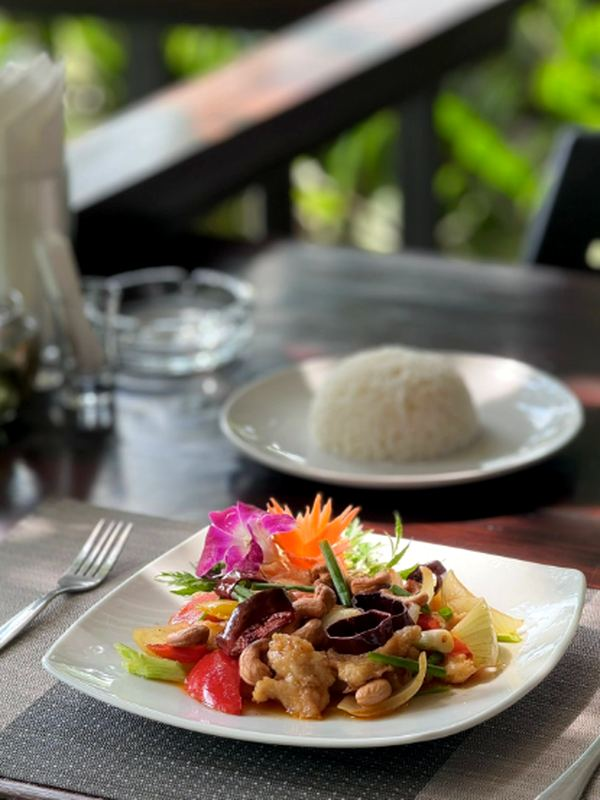
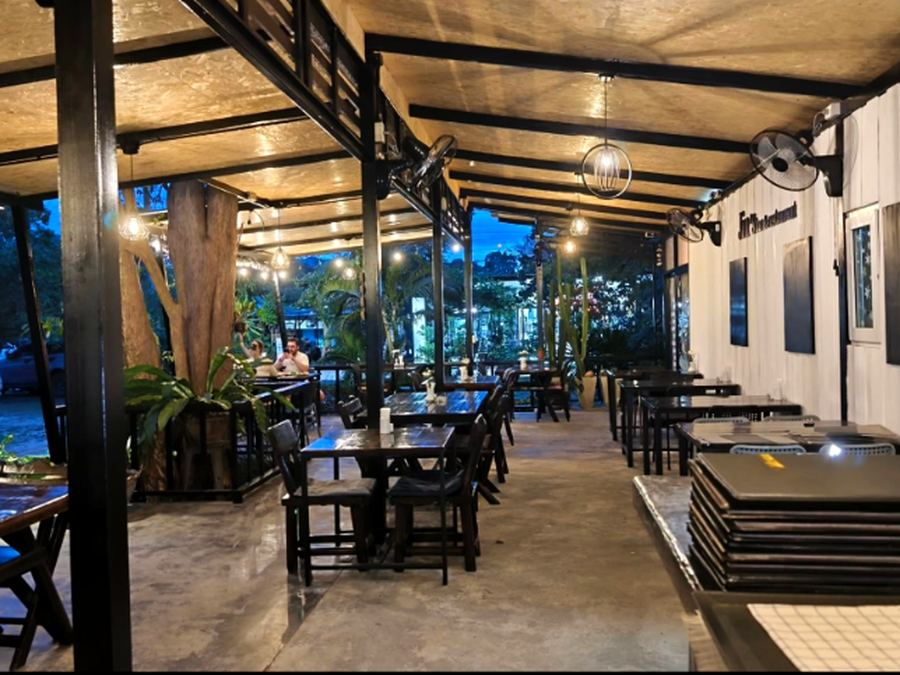

Jin's
bar & restaurant
Koh Samui
Every day 12:00 to 22:00
Near Adarin Beach, Mae Nam
4.7 on Google Maps, 402 reviews (Nov 2026)
Cooked fresh and served on the veranda, with an orchid on the side.





We're in Mae Nam, close to Adarin Beach. Message us on Facebook or give us a call.